Computer-aided Design
Individual assignment
- Model (raster, vector, 2D, 3D, render, animate, simulate, ...) a possible final project, and post it on your class page.
Learning outcomes:
- Evaluate and select 2D and 3D software
- Demonstrate and describe processes used in modeling with 2D and 3D software
Have you:
- Modeled experimental objects/part of a possible project in 2D and 3D software
- Shown how you did it with words/images/screen-shots
- Included your original design files
Tools used
- Caliper
- Camera
Software Used
Design files of final project proposal
- incubator Solidworks source files on Fabacademy Gitlab
Video render and link of my possible final project proposal page
Introduction
In this assignment I will review 3 softwares, Solidworks, 360Fusion and Inkscape. Second I will model a possible final project with Solidworks.
Fusion 360
In my review of fusion I will go thru the process of creating 2 solids. One will match the other based on the grain contour of an oak door frame piece I need repairing.
- I started by taking a picture of the damage on the oak door frame I want to try fixing.
- When fusion starts the work area opens automatically and one can just start designing
- The repair I am attempting is based on the grain geometry of the oak, for that reason I will first insert the picture previously taken into fusion environment The following steps are going to create a 2D sketch environment and let one to insert a picture on it for future reverse engeneering:
- Click on insert
- then click on attachedcanvas
- Now one need to select a plane. The image or canvas as fusion calls it will be inserted next on that plane.
- direcly click on a desired plane, in case one has previously created a solid, a face can be selected as well.
- With the plane selected its time to find the image
- on the opened dialog click on select image
- a file explorer will be opened allowing to find the desired file, select it
- press open
- This frame shows the image inserted on the XY plane
- Now its time to scale the image.
- Click on calibrate.
- Now using the ruler as a reference and as accurate as possible select on 2 points and insert the known measure.
- click on the first point
- click on the second point
- assisted by the ruler in the photo type the known measurement
- Now with the image aligned and scaled its time to sketch a 2D design
- click on scketch
- clicking on the image
- following the image grains draw a pattern
- Basicaly following the pattern of the grain I draw lines to form a geometry
- thats the Geometry with sharp corners.
- in other to remove the sharp corners as the won't be milled one can use the fillet tool.
- In the sketch drop down menu select fillet
- Select the corners to be filleted
- add a dimension in my case I typed 1.5mm as this is the radius of the tool I will use to mill the wood damage
- The final 2D sketch is done and ready for virtual extrusion.
- The process of virtual extrusion in summary is the same as creating a solid 3D object from a 2D sketch:
- click on the Extrude icon on top of Create
- select the 2D sketch
- add a dimention
- Based on the solid (positive) one is ready to make the negative part
- In my case I wanted to have a negative and a positive of the shape so I can mill the pocket and the repair piece. So the next steps:
- select the underside
- click on create sketch
- Whith the new sketch created I drawn a square around it in preparation for ne next step.
- selecting the new sketch and following the same steps on making the last solid I could extrude the base for milling the pocket.
- Thats how both parts look like
 The ruler in the photo will be used in the following steps
The ruler in the photo will be used in the following steps
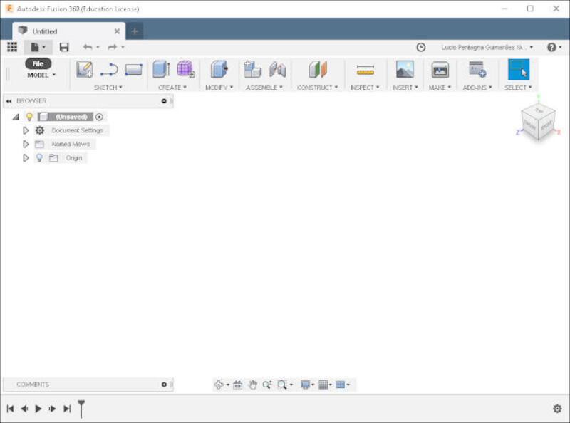
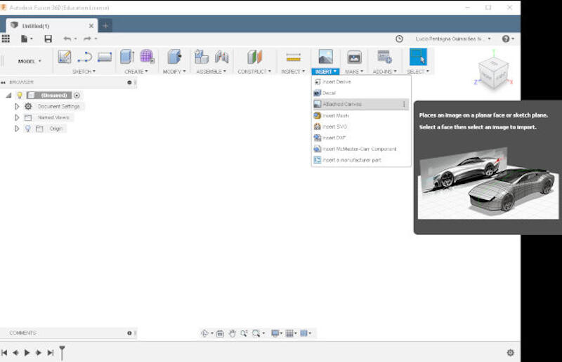
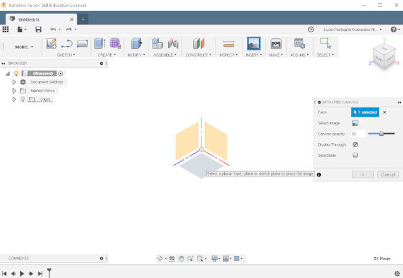
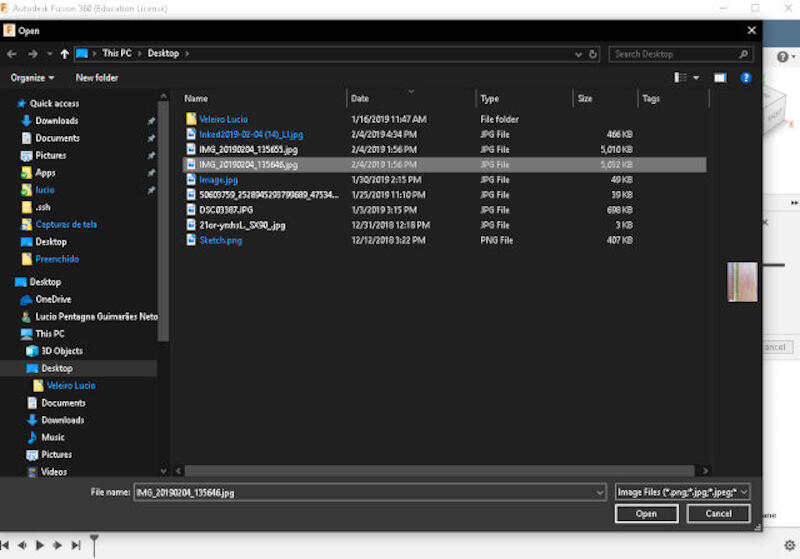
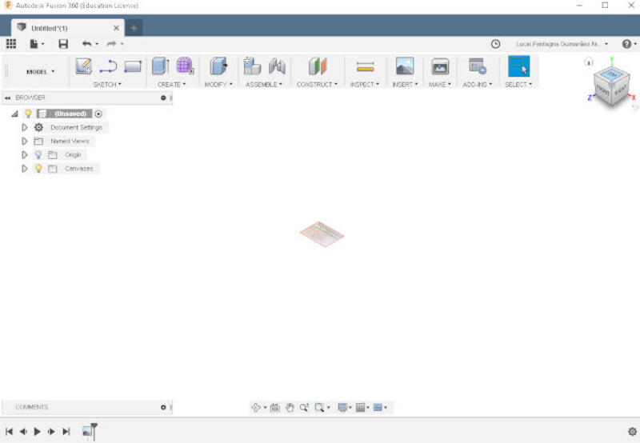


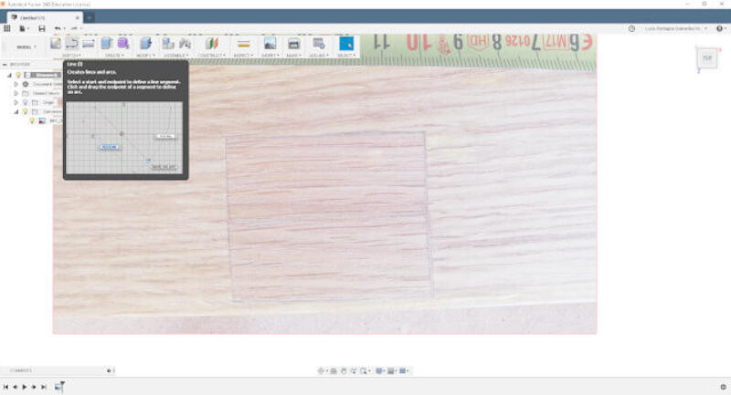

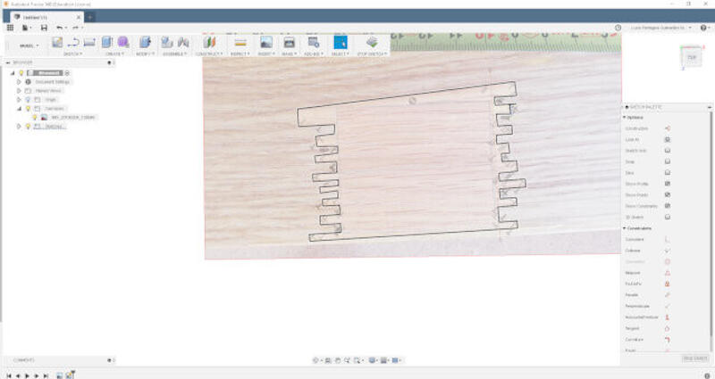

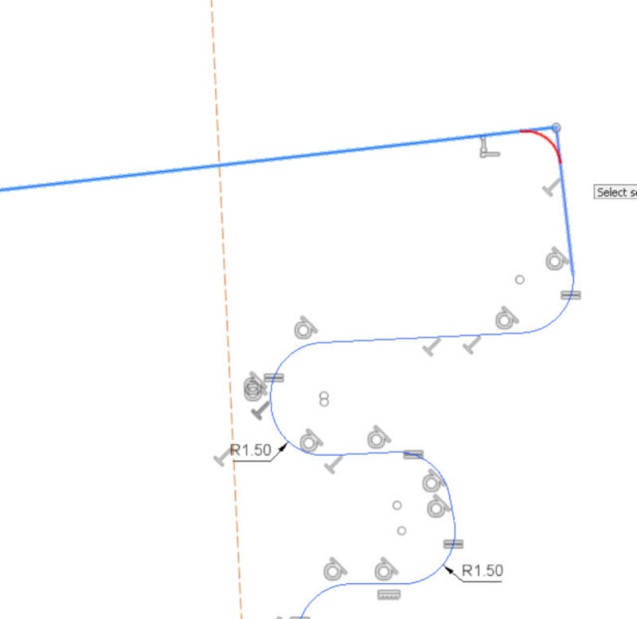
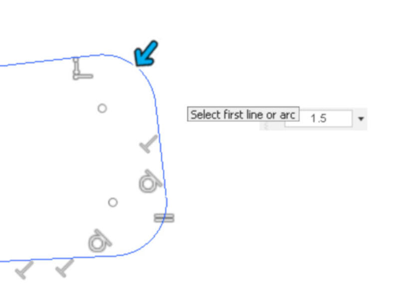

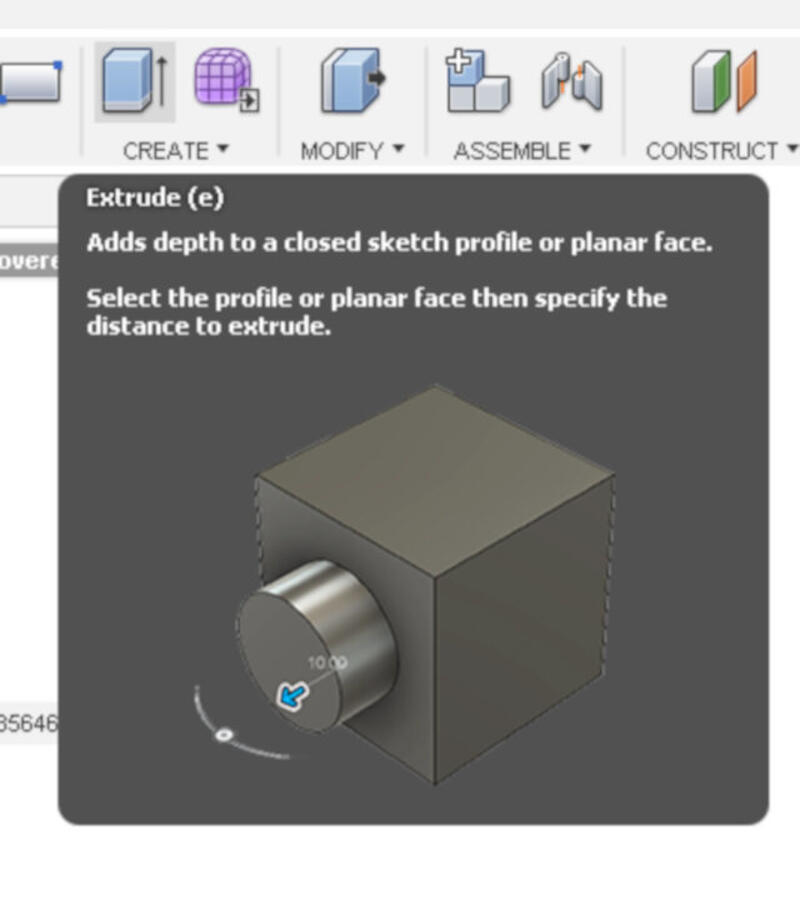

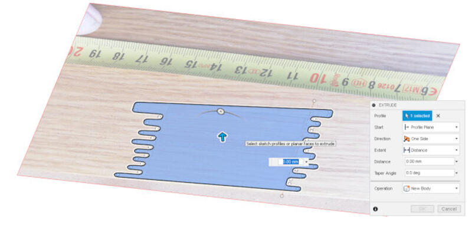
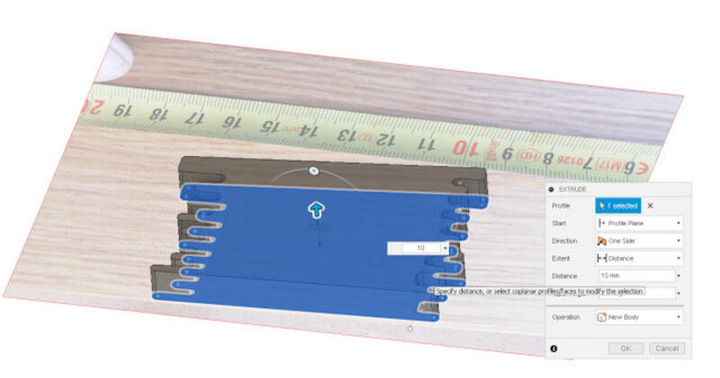


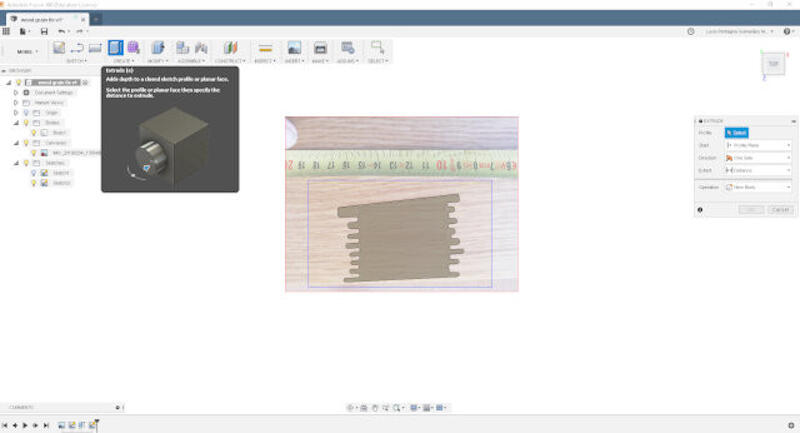

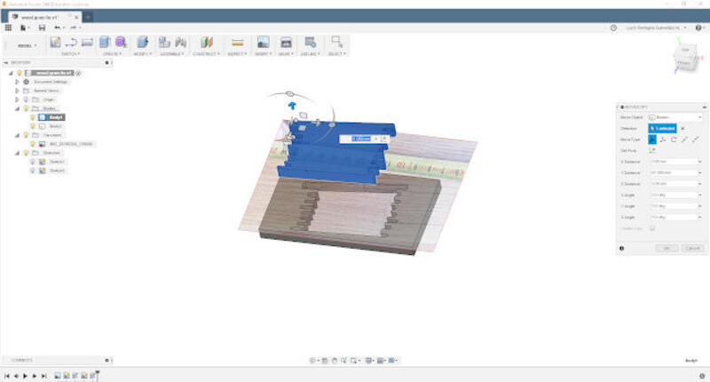
The review of Solidworks 2019 and my Final roject.
Solid works has been my software of choice for the last years when it comes to mechanical design. I am very happy with it as its powerful and alow quite complex assemblies at the same time been intuitive enough for me to learn by using it.
 Image of my possible final project
Image of my possible final project

- incubator Solidworks source files on Fabacademy Gitlab
- Egg
- Case (top)
- Case (bottom)
- Egg Crate
- Heat Element
- Water
- Fan Designed by Xgentec Jason at Grabcad
- Servo Motor Designed by Akshaya Simhaat Grabcad
- Ball Bearing Designed by Hendricks at Grabcad
- Oled Display Designed by thmjpr at Grabcad
- Humidity Sensor Designed by Nonthanut Hoku at Grabcad
Design files of final project proposal
Designed Parts
Downloaded Parts
1. The egg (where it all starts)
- In other to design my final project I started with designing an egg.
- I took a picture of a real egg with the caliper for reference later in solid works
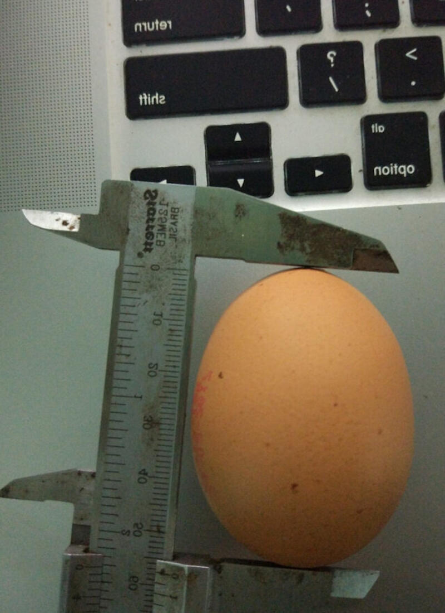
- To use the feature start a new skecth the in the menu go to: Tools > Sketch Tools > Sketch Picture.

- After inserting the picture scale it using the caliper reference as well as the blue ruler provided by Solidworks.

- With the picture calibrated to scale its time to sketch around. For this I used spline tool and closed the spline with a construction line

- Leave the Sketch and Click on Revolved Boss/Base

- If the axis of rotation is not selected automatically, select the line that is in the center of the future egg. Press the green check mark.

- Voila the virtual egg is made!

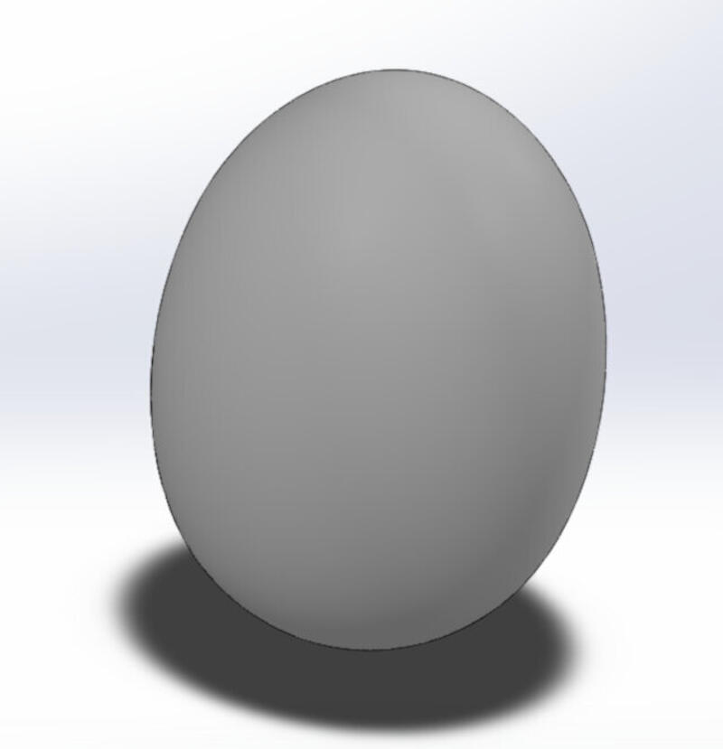
3. Bottom Case
Because of the amount of steps I will only detail the most important ones specifying the type of operation in the beginning and then some of the steps to accomplish it.
- I started by sketching 2 hexagons and extruding it.
- Converting a contour of another object in an assembly:
- With the fan already mated with the sides of the case I selected the outside contour of the fan and converted it creating a sketch.
- Next I cut the space for the fan
- Screw wizard
- In type of Hole, I selected a simple hole as I will later tap the tread.
- In the standard, I selected ISO as it contains metric screws.
- In type of drill, I selected tap drill as this will give the right clearance to use a manual tap to open a tread later.
- Here I selected the size of the screw M3
- Next I clicked in position to determine where the holes will be located.
- Position of screw holes:
- The point sketch is normally selected already unless you had to create construction lines or other operations.
- Next with the I centered each point on the locations where the fan will receive the screws. last confirm and close the operation and the result will be holes created in the surface previously selected.
- Here is the result of the previous operation the holes in place.
- Cavity, this operation is useful as it will save time designing many features that in this example will be simply inherited from the selected object or body:
- Simply start by either searching in the search menu for "cavity" or finding it on the "insert" "features" menu. After the feature is initiate, I selected the part I wanted to inherit the features creating a kind of negative stamp in my part.
- then simply confirm the operation
- Here you see the part with the caity already created.
- Here you see the cavity.


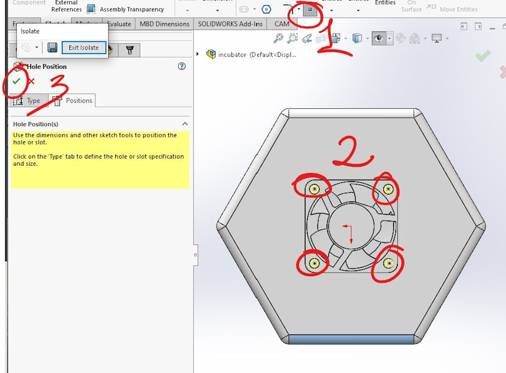

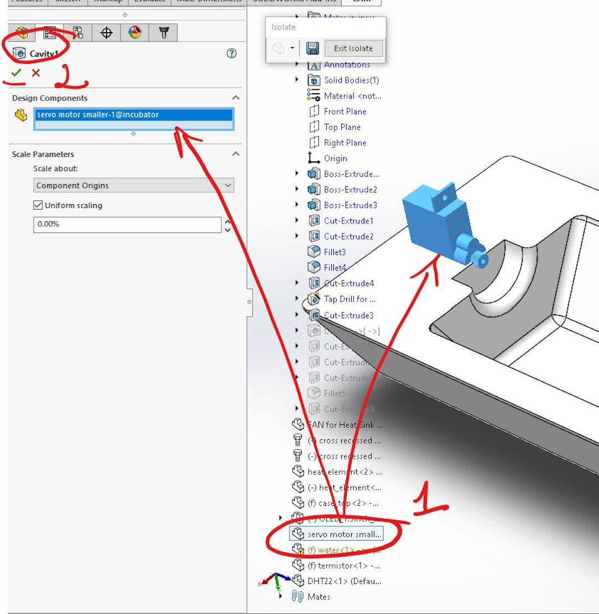

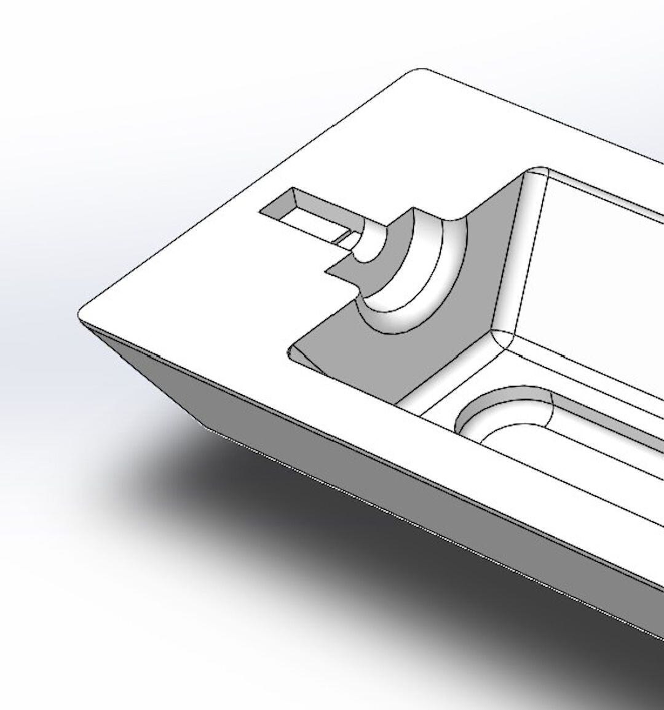
4.The crate
- The crate was a bit complex to create.
- I started by extruding a cylinder
- Next I cut it in half by sketching a half circle on one of its faces.
- This time I used the combine feature instead of cavity.
- The main body should be already selected by default
- Next I selected the part I wanted to combine
- In other to create a foot print I selected the operation subtract
- last select the confirmation check mark to finish the combine feature.
- Linear Pattern is a feature used to replicate in various directions a feature so it saves time instead of designing the pattern feature again and again:
- I started by selecting the pattern.
- then I selected the distance between the patterns
- then I specified it to replicate it 3 times.
- next I confirm
- Here I used the shell feature as I wanted to keep the contours but I wanted the interior to become empty. This was done simply specifying the thickness, in my case 3mm and I did not have to select the body as it was already selected before initiating the feature
- Now in other to expose the previous feature I cut the lower shell by sketching around the lower shell of the body.
- This was a simples cut feature with a complex sketch. The sketch was created by off setting inwards the outer contour, drawing lines towards the center and last trimming all the lines in other to form closed perimeters that were used to cut the shape.
- The cut feature is trivial and was done simply selecting the previous sketch and cutting it through all.
- This was again a linear pattern done in the same manner as the previous one.
- I then Extruded cut the rest of the wall off the once shell of the half cylinder.
- Last I extruded cylinders in between each basket to work as a shaft.
- Fillet was used everywhere in this part hgere I exemplify the shaft being reinforced with the fillet operation.
- The final result of the crate

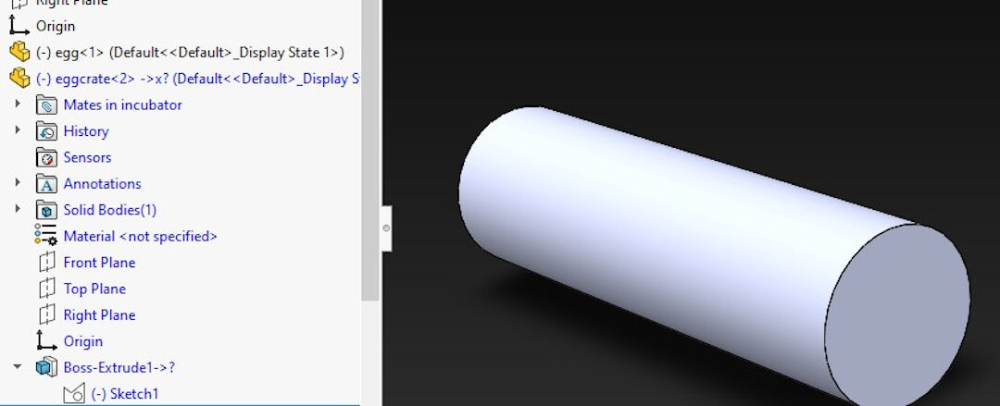


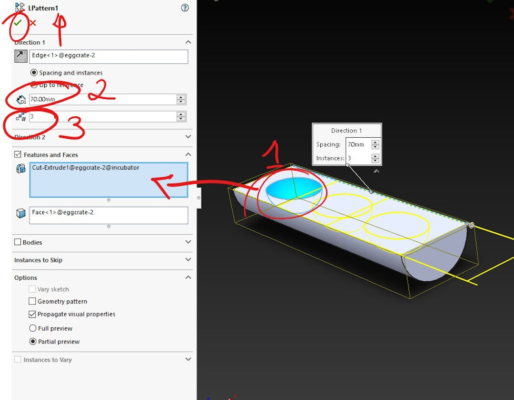


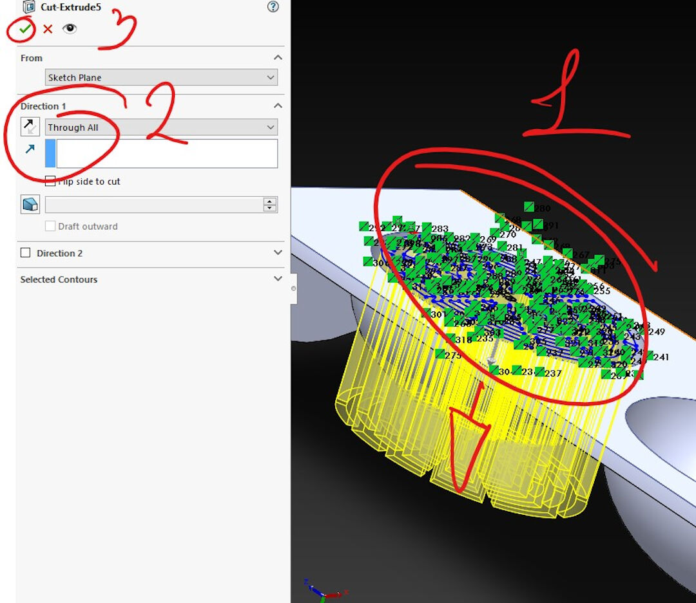

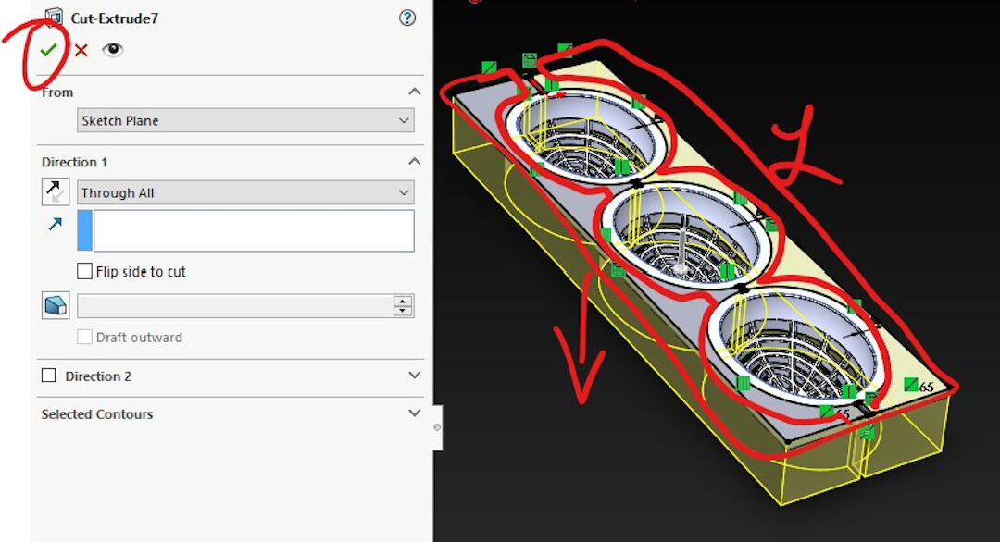


Extra Credits - Milling stuff
Remember the Fusion360 review, well I decided to post photos only of the final result with the mill. I know CNC milling is not this week but I couldn't resist. So not a proper documentation, just some hero photos of the final result.
- This tool-path was made with fusion 360 and it is rendered here in the software BCNC. BCNC is a grbl controller I use with our fablab made CNC
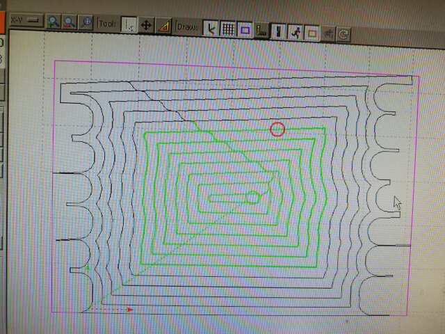
- The CNC mill' spindle here is displayed creating a pocket in the wooden door frame

- Both pieces here right before assembly.
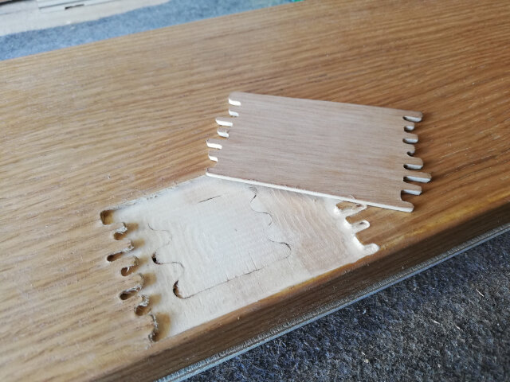
- The pieces did not fit perfectly. We had to file a little. So this shows we will need to do some calibration of the CNC mill in the following weeks. Also I don't like that the veneer was raised from the plywood where the cnc went against the grain.

- Here the pieces are glued together but not yet stained with linseed oil.

- After and Before photo
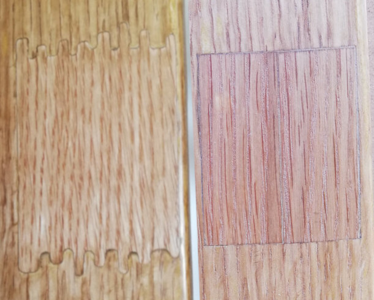
Solid works have been my choice of 3D design software already for sometime. I learned to use it with videos and tutorials on-line
| Solidworks | Fusion360 | Inkscape | |
|---|---|---|---|
| 3d Design |
yes | yes |
no |
| 2D Design | yes | yes | yes |
| CAM | yes | yes | 2D only yes with plugin |
| Parametric | yes | yes | yes |
| run locally | yes | cloud based | yes |
| Price | $$$$ | $ | free |
| Windows | yes | yes | yes |
| Macos | no | yes | yes |
| assembly-driven | yes | no | no |
| large assemblies | yes | has trouble | no |
| simulation solutions | depends on package | begginer plug-ins | no |
| mesh modeling | not intuitive | yes | no |